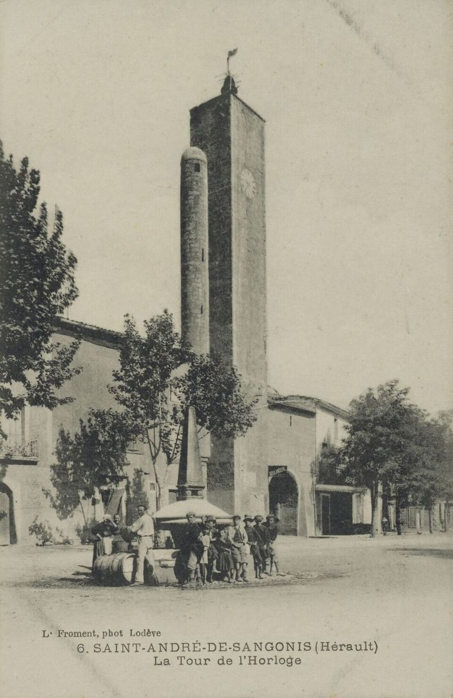
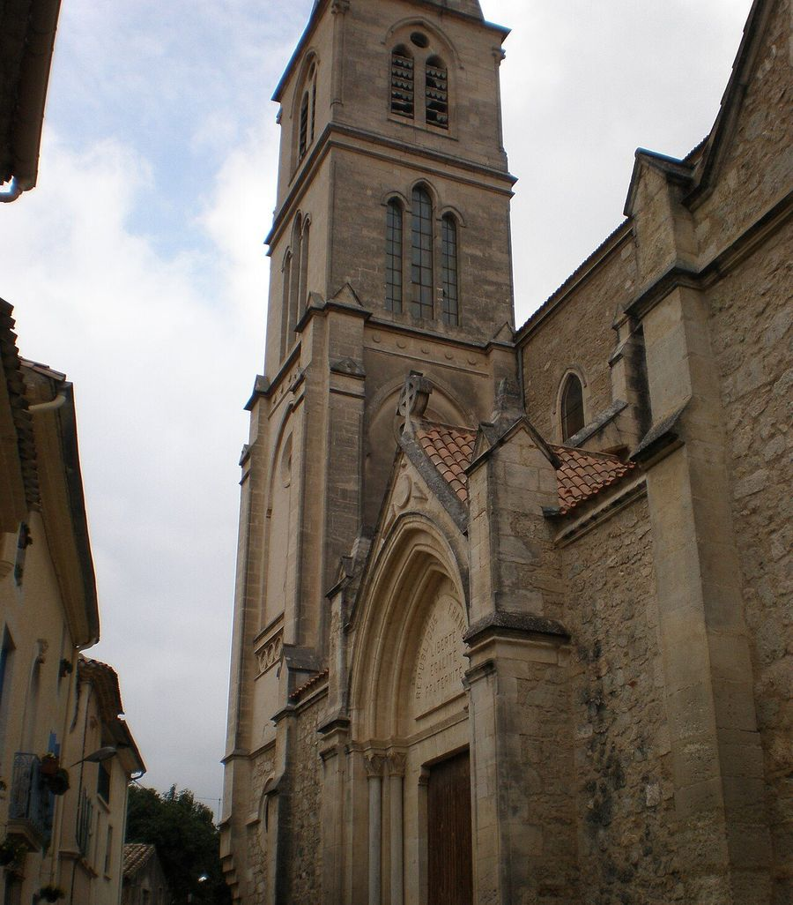
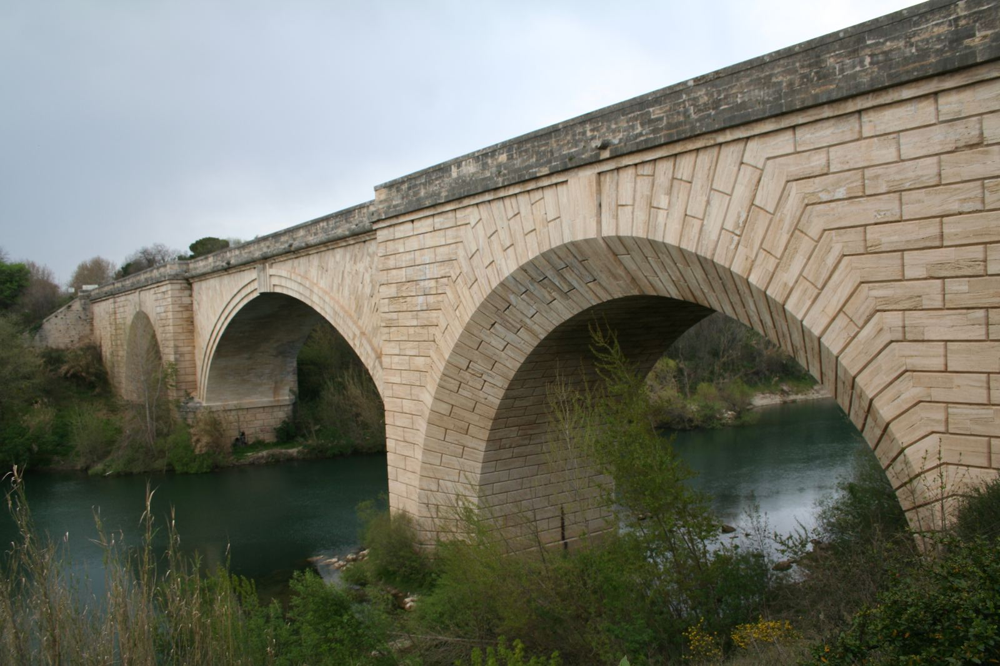

Yannick Vernières
Conseiller municipal
Saint-André-de-Sangonis · Hérault
Les élus du groupe d’opposition au conseil municipal de Saint-André-de-Sangonis. Suivre les décisions, rendre compte, et porter la voix des Saint-Andréennes et des Saint-Andréens.
Le groupe « Sangonis Cœur d’Hérault » réunit trois conseillers municipaux d’opposition, issus de la liste conduite par Yannick Vernières lors des élections municipales des 15 et 22 mars 2026.
Conseiller municipal
Conseillère municipale
Conseiller municipal
Dans une commune, l’opposition municipale participe pleinement à la vie démocratique : elle siège au conseil, prend part aux débats et aux votes, et veille à ce que chaque décision soit expliquée aux habitants.
Examiner chaque délibération, poser les questions utiles et suivre l’usage des deniers publics.
Rendre compte des séances du conseil municipal et expliquer nos votes, simplement et sans détour.
Rester à l’écoute des habitants, relayer leurs questions et leurs préoccupations auprès de la municipalité.
Soutenir ce qui sert l’intérêt général, proposer des alternatives lorsque nous ne sommes pas d’accord.
Saint-André-de-Sangonis (Sant Andrieu de Sangònis en occitan) se trouve dans la vallée de l’Hérault, à environ 34 km de Montpellier, au bord du fleuve Hérault et de la Lergue. Elle fait partie de la Communauté de communes Vallée de l’Hérault. Les vignes y occupent encore l’essentiel des terres agricoles.
Sources : Wikipédia, « Saint-André-de-Sangonis » ; données officielles des communes (geo.api.gouv.fr / Insee).



Climat méditerranéen, terres viticoles, et un patrimoine naturel reconnu : la commune est concernée par le site Natura 2000 des gorges de l’Hérault et par plusieurs zones naturelles d’intérêt écologique, dont la rivière Hérault et la vallée de la Lergue.
Le fleuve longe la commune à l’est : le pont de Gignac, achevé en 1810, le franchit à la limite des deux communes, non loin des vestiges du pont romain de la voie de Nîmes à Toulouse.
Après chaque séance du conseil municipal, nous rendons compte des points à l’ordre du jour, de nos interventions et de nos votes.
Les procès-verbaux officiels sont consultables sur le site de la mairie.
Nos informations au fil de l’eau sont publiées sur notre page Facebook.
Notre page FacebookUne question, une remarque ? Vos élus sont à votre écoute. Écrivez-nous : nous vous répondrons.
Écrire un e-mail